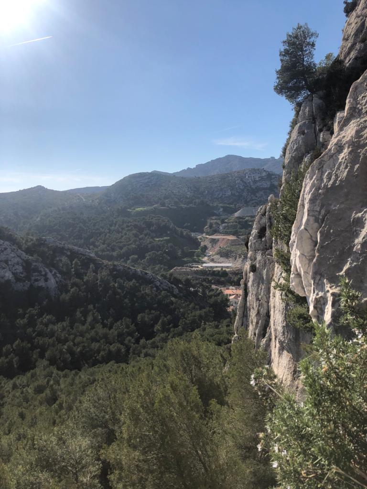
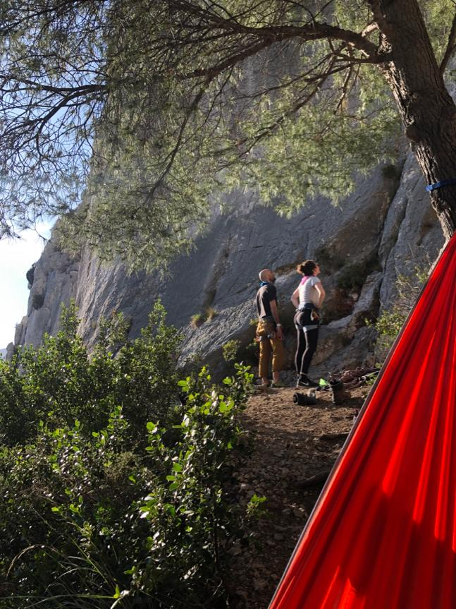
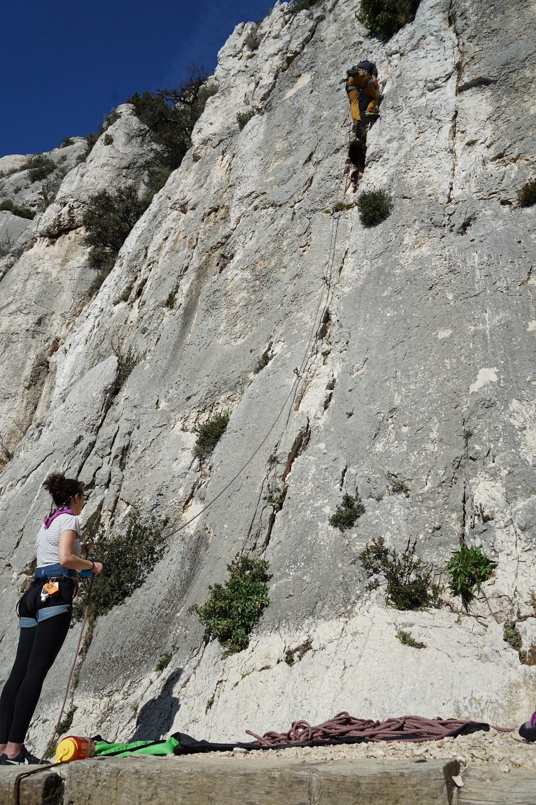

A sport after my own heart, sport climbing is universally (read as: by me) said to be the raddest of the climbings. It involves climbing predetermined routes where someone has bolted iron rings into a wall beforehand. Who are these people? I'm not sure. Can they be trusted? I really couldn't say. Although I've trusted my life to these mysterious benefactors multiple times. From my perspective the danger is not a bolt slipping out of the wall so much as climbing error or perhaps a bolt rusting over time. Like all types of climbing it's important to evaluate the gear before trusting it. If you're worried about it's integrity just go find a new route.
Aside from gear failing there is are more pressing concerns. Climbing up to the first bolt for instance. Until you clip into that bolt there is absolutely nothing anchoring you to the wall, you cannot rest and you cannot fall. A fall from this height is probably no more serious then falling from a boulder problem which is to say still potentially serious. You might be fine, or your ankle my hit some uneven ground and snap off it's kind of a crap shoot. After you get to the first bolt you'll have a place to rest if you lower yourself back down to it but it is still not safe to fall. As you climb from the first to the second bolt the belayer must give you more and more slack to let you climb higher. That slack also mean you will fall farther and since the first bolt isn't that high from the ground there's a decent chance you fall all the way to the ground, which would just be a bummer.
After you get to that second bolt though you're money. The belayer should still probably not give you much slack until you're higher on the wall but the rope should catch you before you hit the ground if you fall. There is always the concern that you get tangled in the rope and flip upside down but to avoid this you simple must not let the rope get behind you as you're climbing. The final concern is potentially swinging and hitting the wall when you fall you simply must be aware of this possibility and be ready to hit the wall feet first if you fall.
That all might sound kind of serious to you. Maybe you're thinking "this just isn't for me" right now. That's cool with me homie, but I gotta tell you it's a fun sport. There's something primal about climbing to the top of something and it's much better if you struggled to get there. Goes back to our ape roots maybe, I don't know. But it feels great. It's challenging on multiple fronts, physically, mentally, and emotionally. You have to be strong, you have to think critically all the way up and you have to not freak out while you're up there. Trust yourself, trust your gear and trust your partner and if you can do all that you get a unparalleled rush of the old limbic system along with some truly spectacluar views.
There's also a very social aspect to sport climbing. Climbing in general will introduce you to some great friends but sport climbing will build a bond like little else. I might be biased because I climb with my girlfriend a bunch but hear me out. You and your partner get to a wall and plan out your route deciding how many clips you need securing your before your safe, at what point you want more slack, when you want less, and just in general what moves you're going to do as you climb up. Here's a picture of me and Kirby thinking it through.
Then you actually start the climb. You are literally putting your life in your partners hands. You're partner is there to double check everything you do, to make sure you're using all the gear appropriately, to make sure your knot is correct, and also just make sure you don't freak out. You want someone that knows when to comfort you and knows when to push you a little bit. It's a hard balance but once you find someone who works it's very much worth the effort. It also never hurts to have another friend there to take some rad climbing pitcures of you.
You should probably climb. Unless you don't want to then you should probably do some other fun activity but no other activities are nearly as rad. Below is a table I just made up listing all sports (that I can think of off the tope of my head) and their radness factor
| Climbing | Fencing | Rowing | Wresting | Soccer | Football | Hockey | Baseball | Basketball | Skiing/Snowboarding | Yatzee | Water Polo |
|---|---|---|---|---|---|---|---|---|---|---|---|
| mad rad | pretty rad | a little too Ivy League | kinda gay | too main stream | concussions are actually a big deal | I prefer to keep my teeth | this is not a sport | MJ=G.O.A.T. | mad rad (but less so) | harder than baseball | cute bonnet |